가장 적합한 수술을 받았더라도 관리가 따라오지 않으면 좋은 결과를
오래 유지하기 어렵습니다.
내 눈에 어떤 수술이 가장 좋은 선택일까요? 눈의 도수, 각막과 안구 특성, 야간 시야, 노안 여부, 회복기간과 생활패턴을 고려한 아이리움의 다양한 시력교정술을 확인하세요.
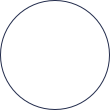
안경·렌즈없이 빠르고
선명한 일상이 필요한 분
각막 절개 최소화, 로우 에너지 수술로 수술 다음 날 바로 일상복귀와 편안한 시야를 선사합니다.
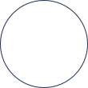
라섹 후 회복기간,
야간
시력의 질까지 원하는 분
각막 상피 회복을 이틀로 줄인 투데이 라섹 프로토콜. 야간 빛 번짐과 통증까지 최소화합니다.
각막이 얇거나
고도근시인 분
수술이 어려울까 봐 고민하시나요? 안전을 최우선으로 한 폭넓은 교정 옵션을 제안합니다.
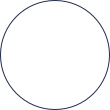
40~50대,
가까운
글씨가 침침해지신 분
스마트폰, 독서, TV, 운전 등 일상 생활이 불편해지기 시작한 분들을 위한 프리미엄 노안 교정입니다.
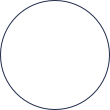
나에게 어떤 수술이
맞을지
고민되시는 분
정밀 검사로 내 눈에 가장 안전하고 적합한 방법을 정확하고 투명하게 확인해 드립니다.
왼쪽으로 스와이프
| 스마일 | 라식 | 라섹 | 렌즈삽입술 | |
|---|---|---|---|---|
| 수술 |
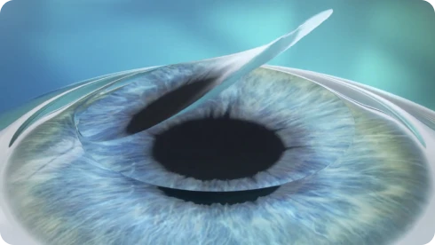 스마일은 각막 실질부위에 펨토초 레이저로 렌즈 모양의 각막렌티큘(조각)을 만들어 1~2mm 상당 각막의 절개창을 통해 추출하는 수술입니다. |
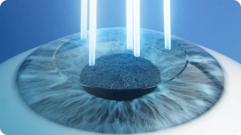 라식이란, 각막 상피에 얇은 절편(뚜껑)을 만들어 젖힌 후 각막 실질부를 절삭하여 시력을 교정하는 수술법입니다. 수술 후 절편은 다시 제자리로 덮습니다. |
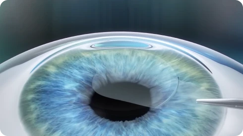 라섹이란, 각막에 절편을 만들지 않고 각막 상피를 제거 후 각막 실질부 절삭을 진행하는 수술입니다. |
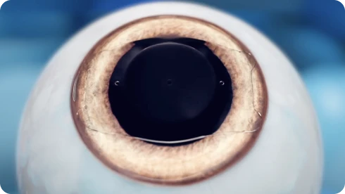 안내렌즈삽입술이란 각막을 절삭하는 과정 없이 시력교정용 특수 렌즈를 안구 내 삽입하여 시력을 교정하는 방법입니다. |
| 아이리움 Only |
아이리움안과의 스마일 수술은 레이저 에너지를 낮춰 각막을 매끈하게 하는 '로우에너지 스마일', 레이저 타임 단 8초대
'스마일 프로'를 결합해 시력의 질을 높입니다.
|
아이리움안과의 '커스텀아마이즈 라식'은 아마리스 레드 1050RS 엑시머레이저와 비쥬맥스 펨토초 레이저로 1:1
맞춤수술합니다.
|
아이리움안과의 '투데이라섹'은 각막 상피 제거부터 실질부 수술까지 올레이저로 진행, 각막 상피 회복 단 2일, 통증 감소는 물론 1:1
맞춤형 '커스텀아마이즈' 기술이 야간 빛번짐 감소에 도움을 줍니다.
|
FDA 승인 받은 ICL 계열 렌즈만 수술하며 10여년 간 ICL 장기적 임상 데이터를 바탕으로 개인별 최적의 볼팅(렌즈와 수정체
사이의 거리)과 렌즈 종류 및 크기를 결정할 수 있습니다.
|
| 절개 |
최소 절개 (1~2mm)
|
각막 절편(Flap) 생성
|
절개 없음 (상피 제거)
|
각막 절제 없음
|
| 통증 |
거의 없음
|
거의 없음
|
2~3일간 통증/이물감
|
거의 없음
|
| 회복 기간 |
가장 빠름 (다음날 일상 가능)
|
빠름
|
일반 라섹 대비 빠름 (투데이 회복 프로토콜 적용 시)
|
빠름
|
| 외부 충격 |
강함 (라식 대비)
|
눈 비빔 주의
|
가장 강함 (상피 회복 후)
|
눈 비빔 주의
|
| 교정 범위 |
근시·난시·원시 (스마일프로)
|
근시·난시·원시
|
근시·난시
|
근시·난시
|
| 주요 장점 |
시력의 질 개선, 눈물신경 손상 감소
|
사후관리가 비교적 쉬움
|
잔여 각막을 가장 많이 남김
|
각막이 얇아도 가능, 가역성
|
| 주의사항 |
수술 직후 눈 비빔 금지
|
눈 비빔 금지, 외부충격 주의
|
회복 기간 중 자외선 차단 필수
|
수술 직후 눈 비빔, 엎드리기 제한
|
| 수술 대상 |
|
|
바로가기 |
바로가기 |
Safety Protocols of EYEREUM
각막 두께가 두껍다고 라식수술하던 시대는 지났습니다. 이제는 각막의 보이지 않는 곳까지 더욱 철저하고 까다롭게 검사하고 수술 적합 여부를 확인합니다. 코르비스ST 각막강성도 검사와 각막지형도 검사를 결합해 각막생체역학력을 분석, 70여 가지 안전검사로 눈 상태에 가장 적합한 수술을 선택합니다.
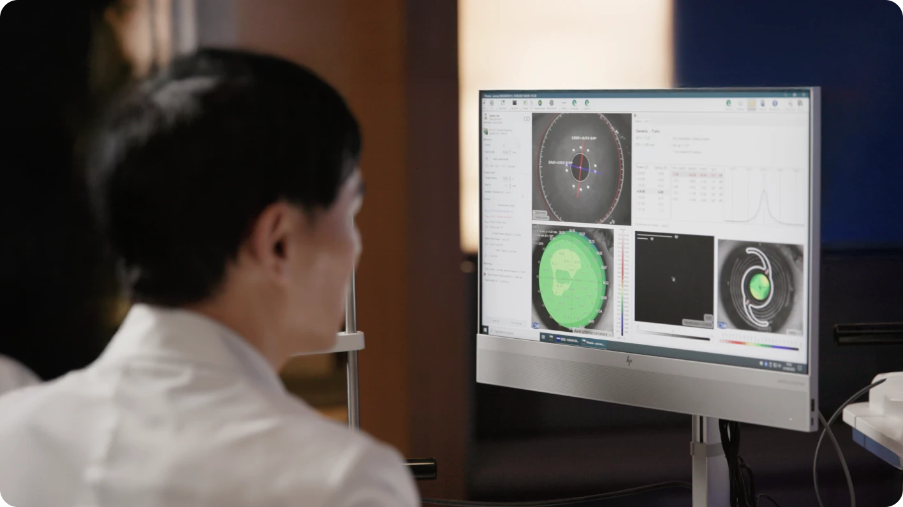
개인의 시력과 각막두께, 동공의 크기, 내피세포, 직업군, 생활 환경 등 수십가지에 이르는 다양한 요인들에 의해 가장 적합한 수술방법을 찾는 것이 가장 좋은 수술을 받을 수 있는 유일한 방법입니다.
아이리움안과에서는 보다 안전한 수술방법을 찾기 위해 보다 더 정밀한 검사 시스템을 갖추고 있으며, 고객의 생활습관, 업무 환경 등을 고려하여 최적의 수술방법을 찾아드립니다.
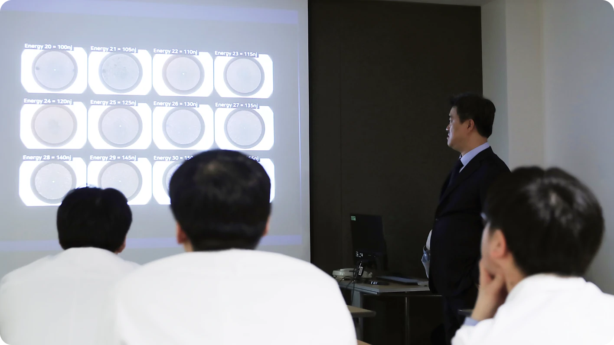
아무리 가장 적합한 수술을 받았다 할지라도 철저한 본인의 관리가 이루어지지 않는다면 결코 좋은 시력을 유지할 수 없습니다.
아이리움안과가 바쁜 직업군에 종사하시는 분들일수록 사후 관리와 정기 외래진료의 중요성을 더욱 강조하는 이유입니다. 좋은 시력을 오래 유지할 수 있는 방법은 첫째도 후 관리고, 둘째도 후 관리 밖에 없기 때문입니다. 아이리움안과에서는 시력교정 수술을 받으신 분들이 보다 편리하고 지속적으로 후 관리를 스스로 해나갈 수 있도록 다양한 컨텐츠를 제공해드리고 있습니다.
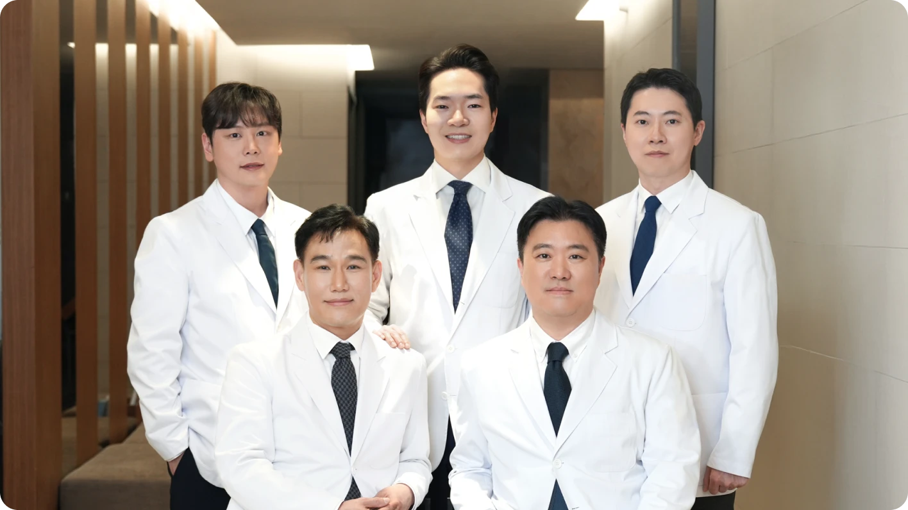
나에게 맞는 수술 전, 가장 많이 묻는 질문
로우에너지 스마일은 일반 스마일과 무엇이 다른가요?
수술 방식은 정밀검사 결과를 바탕으로 결정됩니다. 근시·난시 정도, 각막 두께와 형태, 고위수차, 야간 빛번짐 우려, 회복 목표 등을 종합해 기본 투데이라섹, 커스텀아이즈 투데이라섹, 커스텀아이즈 Plus 중 적합한 방식을 안내합니다.
로우에너지 스마일, 로우에너지 스마일프로, 플라즈마 스마일은 무엇이 다른가요?
수술 방식은 정밀검사 결과를 바탕으로 결정됩니다. 근시·난시 정도, 각막 두께와 형태, 고위수차, 야간 빛번짐 우려, 회복 목표 등을 종합해 기본 투데이라섹, 커스텀아이즈 투데이라섹, 커스텀아이즈 Plus 중 적합한 방식을 안내합니다.
아이리움이 사용하는 로우에너지 스마일 수술 장비는 어떤 것이 있나요?
수술 방식은 정밀검사 결과를 바탕으로 결정됩니다. 근시·난시 정도, 각막 두께와 형태, 고위수차, 야간 빛번짐 우려, 회복 목표 등을 종합해 기본 투데이라섹, 커스텀아이즈 투데이라섹, 커스텀아이즈 Plus 중 적합한 방식을 안내합니다.